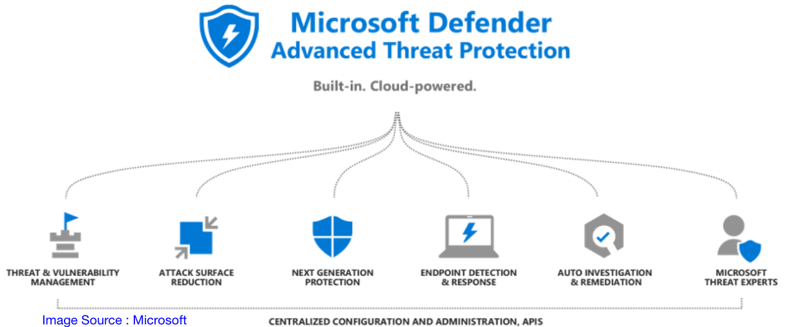
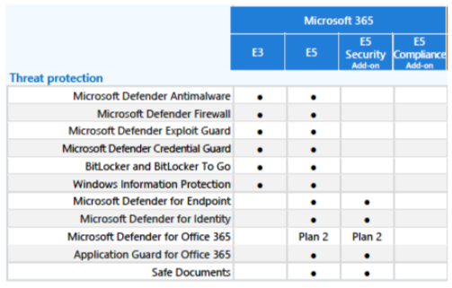

Microsoft 365 Advanced Threat Protection
*Please note that the slido poll results shown later are from the clinic which took place on Friday 21st May 2021
SLIDO 1
Which M365 licensing model do you predominantly use? (29 Votes in total)
E3 - 93%
E5 - 7%
Description
Advanced threat protection (ATP) refers to a category of security solutions that defend against sophisticated malware or hacking-based attacks targeting sensitive data. Advanced threat protection solutions can be available as software or as managed services.
Microsoft provide a range of ATP services which integrate into M365 / Azure / On Prem environments.
- Note : Information contained in this detail on M365 features and costs regarding Microsoft references were correct as of May 2021.
Microsoft Defender ATP : Approach

Microsoft 365 provides a holistic approach to security, helping you to protect identities, data, applications, and devices across on-premises, cloud, and mobile
What does Microsoft ATP give me ?
Microsoft Defender ATP is not an antivirus (AV) product.
Microsoft Defender ATP is a post-breach solution that compliments Microsoft Defender AV.
Microsoft Defender for Identity monitors and protects user identities and credentials
Microsoft Defender for Office 365 helps protect against advanced threats like business email compromise and credential phishing. Automatically investigate and remediate attacks.
Microsoft Defender AV provides anti-malware and anti-virus capabilities for the Windows 10 OS.
Together they give a holistic protection for your organisation
Threat Protection as part of Microsoft 365
Microsoft Advanced Threat Protection comes in many ‘flavours’
Threat Protection forms part of the E5 license plan.
E3 can be added to with the E5 Security Add-on.
The components that are part of E5 / E5 Security are:
Microsoft Defender AV and Device Guard (also part of E3)
Microsoft 365 Defender
Microsoft Defender for Endpoint
Microsoft Defender for Office 365
Microsoft Defender for Identity

For a full comparison of features download a table from: https://go.microsoft.com/fwlink/?linkid=2139145
Microsoft 365 E5 Security Add-on
Microsoft 365 E5 Security is an add on product for most* business M365 plans, and it includes:
Azure AD Premium P2
Office 365 Advanced Threat Protection P2, (which includes:)
Office 365 ATP Plan 2**
Office 365 Threat Intelligence
Microsoft Cloud App Security
Microsoft Defender for Identity (Azure ATP)
Microsoft Defender ATP
Retail cost is approximately £9.05/user/month, which when added to E3 is a lot less than an E5 license !
*E3 is the primary license model this is aimed at. However others are supported. Contact your Microsoft Partner for further information.
**Documented on the Microsoft 365 Enterprise table of features
SLIDO 2
Do you own any of these premium add ons? (24 Votes in total)
E5 Security Add-On - 17%
E5 Compliance Add-On - 4%
E3 EM+S - 46%
E5 EM+S - 4%
Azure AD P1 - 75%
Azure AD P2 - 25%
SLIDO 3
Which areas of Microsoft ATP were you aware of before today? (30 Votes in total)
Microsoft Defender ATP - 77%
Microsoft Defender for Identity (Azure ATP) - 50%
Microsoft Defender for Office 365 - 63%
Microsoft Defender AV - 73%
Things to consider for Microsoft ATP
Now i know what you are thinking - it can’t all be good can it ?
Well you are right. In a large estate the biggest downside is without a doubt cost.
Almost all of the features that would attract you to the ATP/Defender services are add-on licensing unless you have E5. And E5 is not inexpensive.
Detection. With reference to Defender AV, as with any AV product, there is no 100% guarantee of detection, but the outbreak and containment features when it is integrated into the other product sets are a plus point.
Microsoft Defender AV is pattern-based, so it can only detect zero-day exploits if they have already been included in the security intelligence updates.
In general the biggest threat to security are end users, so if you don’t educate them regularly on security risks and how to avoid them it doesn’t matter how good your ATP system is.
When you implement the MS Threat Protection and keep it up to date, and keep monitoring it, it will give you a good overview of your estate from a security perspective.
Microsoft ATP - Component Pieces:
The ‘Threat Protection’ included in the E5 / E5 Security license plans are built up of the following:
Microsoft Defender ATP - unifies your incident response process by integrating key capabilities across Microsoft Defender for Endpoint, Microsoft Defender for Office 365, Microsoft Cloud App Security, and Microsoft Defender for Identity. This unified experience adds powerful features you can access in the Microsoft 365 security center.
Microsoft Defender for Identity - used as part of your Microsoft 365 tenancy
Microsoft Defender AV (Endpoint)- used on Windows 10 endpoints to provide anti-malware and anti-virus capabilities.
Microsoft Defender for Office 365 - a cloud-based email filtering service that helps protect your organization against unknown malware and viruses by providing robust zero-day protection, and includes features to safeguard your organization from harmful links in real time.
Note : Microsoft Defender AV and Device Guard are also part of E3.
Doesn’t Microsoft Exchange Online have protection ?
Well, sort of…
** Exchange Online Protection** is present which prevents broad, volume-based, known attacks. EOP is included in all Microsoft 365 organizations with Exchange Online mailboxes.
** Microsoft Defender for Office 365 P1** is the next level to go to, which protects email and collaboration from zero-day malware, phish, and business email compromise.
** Microsoft Defender for Office 365 P2** is the current top level of protection which adds post-breach investigation, hunting, and response, as well as automation, and simulation (for training). This is included as part of E5 / E5 Security.
Ref: https://docs.microsoft.com/en-us/microsoft-365/security/office-365-security/overview
EOP can also be used in a standalone scenario - it provides cloud-based email protection for your on-premises Exchange organization or for any other on-premises SMTP email solution.
It also can be deployed in a hybrid deployment - it can be configured to protect your email environment and control mail routing when you have a mix of on-premises and cloud mailboxes.
If you have Defender for Office 365 Plan 1, it is a relatively small uplift in cost to move to Plan 2.
Each level builds on the last

The core of Office 365 security is EOP protection.
Microsoft Defender for Office 365 P1 contains EOP in it.
Defender for Office 365 P2 contains P1 and EOP.
The structure is cumulative.
That’s why, when configuring this product, you should start with EOP and work to Defender for Office 365.
The Threat Protection Suite Components
Windows Defender ATP
Windows Defender ATP integrates with Defender for Identity to detect and protect against malicious activity, but on your endpoint devices (Windows 10).
It leverages technologies such as Windows Defender Antivirus, AppLocker, and Windows Defender Device Guard.
It detects sophisticated cyber-attacks by providing intelligent protection by leveraging Azure based behaviour attack detection.

- Image Source : https://www.proserveit.com/blog/advanced-threat-protection-3-atps-of-microsoft
Windows Defender ATP features
Next-Gen Threat Protection: Windows Defender ATP has next-gen threat protection and post-breach detection built right into the Windows 10 Operating System, so you don’t need to worry about installing a new agent.
Windows Defender ATP adapts to changing threats, can deploy new defenses, and can orchestrate any remediation that is required.
Smart & Connected Threat Protection: Windows Defender ATP uses the power of the Cloud, behaviour analytics, and machine learning to provide you with smart and connected threat protection.
Faster Detection and Response: With Windows Defender ATP’s comprehensive monitoring tools, you can detect any abnormalities and respond to any attacks much faster.
Recommendations: Windows Defender ATP lets you track your overall security posture and gives you recommendations on how to further reduce your organization’s attack surface.
It also give you access to Historical Data - Windows Defender ATP enables you to search and explore up to six months of historical data across your endpoints in an instant.
Microsoft Defender for Identity
Microsoft Defender for Identity (Previously known as Azure ATP) is a cloud-based security solution that leverages your on-premises Active Directory signals to identify, detect, and investigate advanced threats, compromised identities, and malicious insider actions directed at your organization
Defender for Identity enables SecOp analysts and security professionals struggling to detect advanced attacks in hybrid environments to:
Monitor users, entity behavior, and activities with learning-based analytics
Protect user identities and credentials stored in Active Directory
Identify and investigate suspicious user activities and advanced attacks throughout the kill chain
Provide clear incident information on a simple timeline for fast triage
Ref : https://docs.microsoft.com/en-us/defender-for-identity/what-is
Defender for Office 365
Defender for Office 365 ATP protects your email, files, and Office 365 applications against potential attacks such as unsafe attachments, malicious links and credential phishing attempts.
It can automatically investigate and remediate attacks.

Image Source : https://www.nakivo.com/microsoft-office-365-backup/microsoft-office-365-advanced-threat-protection-overview/
Microsoft Defender for Office 365 P2 will give you this protection, and builds on both P1 and Exchange Online Protection (EOP).
Why use Defender for Office ?
Real-Time Protection from Sophisticated Attacks: Office 365 ATP protects your mailboxes, online storage, files, and other applications you’re using against any new, sophisticated attacks in real time.
Protection Against Unsafe Attachments: Using Safe Attachments, Office 365 ATP protects against unsafe attachments and provides you with a malware-free, cleaner inbox.
Visibility into Potential Targets: Office 365 ATP lets you see who might be targeted in your organization, and what kinds of attacks you might be facing.
Unsafe Link Blocking: Office 365 ATP blocks users from clicking on unsafe links. If a link they click on is unsafe, the user is either informed that the site’s been blocked, or warned not to visit it.
URL Trace Capabilities: Office 365 ATP provides URL trace capabilities that lets you track what individual has clicked malicious links in the messages they’ve received.
Ref: https://www.microsoft.com/en-us/security/business/threat-protection/office-365-defender
Comparison with 3rd Party Products
You may have your own 3rd party products integrated into your system, such as a separate mail filter for inbound (and outbound) mailflow checking and analysis, localised AV protection and malware protection.
Defender AV vs ‘Paid for’ AV protection. The cost saving may facilitate the purchase of the E5 Security add-on.
Does a 3rd party ATP product compare favourably with the Microsoft Threat Protection Suite ? The Gartner Magic Quadrant puts the MS offering in a very good position
Integrating all the protection elements together into a Microsoft ATP based solution may be worth considering as it will give a centralised point of management.

- As you can see in this Gartner ‘Magic Quadrant’ image, Microsoft are in a very good position in the industry for their Threat Protection offerings.
SLIDO 4
What would be a barrier to you implementing further ATP / Defender products (or 3rd party ones) within your organisation? (31 Votes in total)
Cost - 87%
Leadership ‘Buy-In’ - 48%
Perceived Complexity - 29%
User Understanding - 13%
Other - 13%
Summary
This was a very high level overview of the offering for Threat Protection from Microsoft for their M365 suite and your Windows 10 Estate.
The intention is to give you some ‘food for thought’ about your approach to threat protection and outbreak containment.
Remember you are not just buying the license add on or upgrading your current licensing, you will also need to configure the product. For this we advise you to work with your Microsoft Partner (or Microsoft 365 Support themselves).
From a personal perspective I would also recommend that you consider a 3rd party email filtering system for inbound email before it hits your M365 Exchange Online (or On premise Exchange!). Consider it ‘belt and braces’ !
Further Reading
Aside from Microsoft, please review these 3rd party websites for some alternative views on guidance around ATP’s capabilities.
Engage with your local IT MSP Organisation for how to implement within your organisation.
https://msexperttalk.com/azure-advanced-threat-protection-deployment/
https://www.chorus.co/resources/news/what-is-microsoft-defender-advanced-threat-protection-atp
https://www.proserveit.com/blog/advanced-threat-protection-3-atps-of-microsoft
https://www.nakivo.com/microsoft-office-365-backup/microsoft-office-365-advanced-threat-protection-overview/
Appendices
Microsoft Defender for Identity is available as part of Enterprise Mobility + Security 5 suite (EMS E5), and as a standalone license.
Microsoft Defender for Office 365 Plan 2 is included in Office 365 E5, Office 365 A5, Microsoft 365 E5 Security, and Microsoft 365 E5 as specified here: https://docs.microsoft.com/microsoft-365/security/office-365-security/office-365-atp.
Defender for Office 365 Plan 1 is included in Microsoft 365 Business Premium.
Microsoft Defender for Endpoint requires one of the following Microsoft volume licensing offers: Windows 10 E5/A5, Microsoft 365 E5 (which includes Win10 E5)/A5, Microsoft E5/A5 Security, Microsoft Defender for Endpoint